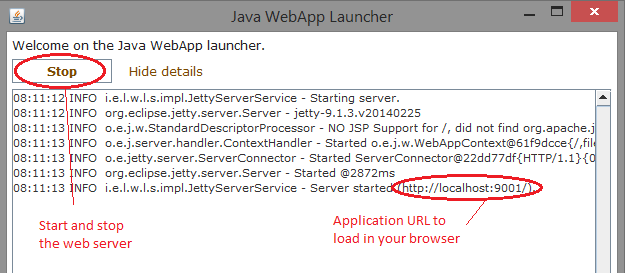
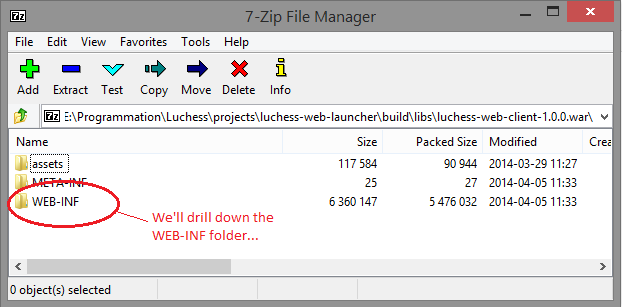
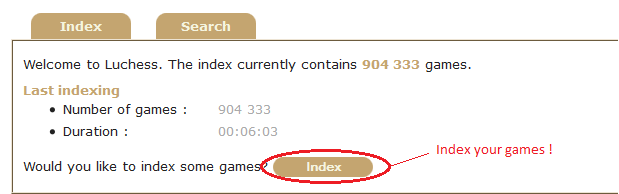
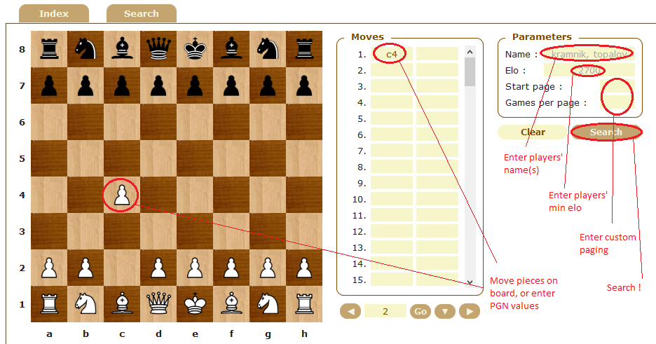

Luchess User Guide
About
Luchess is a web application which lets you index chess games, and search for these games, either by some player's name and rank, or some opening moves. It is based on the popular Lucene search library, and should be able to handle large volumes of chess games (say, many millions), giving you relevant search results in a matter of a few milliseconds.
Luchess is free and open source, currently available in English and French. You may run it for your personal pleasure, or for your friends. If you're a programmer, you may even reuse parts of it (check the developer guide, though). I do not know whether other chess-related programs provide the same service as Luchess. As it appears, searching chess games should be quite important to chess players, so I'm pretty sure there are some lurking around, and certainly better at this job than Luchess.
Installation
Running Luchess with its launcher
The simplest way to run Luchess is through the Luchess launcher. Go to the dist directory, and grab the two programs you'll find there: luchess-web-client-1.0.0.war and luchess-web-launcher-1.0.0.jar. Put them together inside a directory, then execute the launcher, accept any firewall request, and press the start button (see below if you run into problems).
Congratulations, you've just started your own java web server (called Jetty)! You can now open your favorite browser, and navigate to the URL written in the launcher (something like http://localhost:9001/).
Now, many things can go wrong. Let's review the most common issues:
- Java is missing or not up-to-date! Luchess uses Java to run, so you need to have Java installed on your computer. Also, Luchess requires the version 1.7 of Java - because prior versions are slower and have security vulnerabilities. If you want to check your java version, just run java -version anywhere in your command line. If it's not valid, then download and install the 1.7 Java Runtime Environment (JRE) from Oracle's Java web site.
- The ".jar" extension is opened with some zip utility! Well, the "jar" format is indeed a zip-like format, so it's not unexpected. Simply right-click the launcher file, and select "Open With", choosing "Java Platform SE binary". If you prefer, you may also run the following command line, from the directory where you have copied the two files: java -jar luchess-web-launcher-1.0.0.jar.
Configure your own games
The Luchess application comes with a sample of chess games, and by default stores the index of the games into memory. As a result, users can try and test the application right after downloading it, without any need for configuration. Now, if you intend to use Luchess in a more regular way, you'll want not only to use your own set of games, but also keep the index on disk, so as to not calculate it each time you start the application. You can do so by updating the Luchess configuration files (there are two of them).
Before we explain how to configure Luchess, let us talk a bit about the format of the chess games. Luchess works with only one format, but fortunately one of the most popular: the PGN format. Basically, this format lets you store games in plain text files, and is implemented by many chess softwares. Your game collection is likely to already be expressed in PGN - and if not, then you'll probably have no problem converting it.
Updating the configuration files is a bit tricky (sorry about that). First, make sure the launcher is not open (you cannot change the configuration of a running launcher). Move on by opening the luchess-web-client-1.0.0.war using a zip utility (like 7-zip). While the ".jar" extension is usually associated to the Java Launcher, the ".war" extension should already be bound to your zip utility (if not: simply right-click the file and choose "Open With").
Inside your zip utility, navigate to and open the file WEB-INF\classes\luchess-app.properties. You'll see a bunch of properties, which contain the configuration for the Luchess application. You need to update the following properties: luchess.configuration.directory.type (choose "fs" for filesystem) and luchess.configuration.directory.target.path (input the full path of the directory where you want the index to be stored), then save the file and close it. Proceed similarly for the second configuration file, located at WEB-INF\classes\luchess-app.properties, updating the path for the property luchess.configuration.directory.source.path.
In both cases, make sure that the lines you have changed do not start with a leading "#" - if they do, this means that they are "commented", i.e. are just here for the sake of the documentation, but not taken into account by the program. Also, if you input some file paths on a Windows platform, you need to "double" backslashes in your paths - something like "C:\Users\foo" should be written "C:\\Users\\foo".
Once you're done, close the archive - your zip utility should warn you that files have been modified, just accept and save it (that's the very purpose of the configuration). Run the launcher then start the server, and you should be back in business.
Examples:
Deploying on your own Java web server
The Luchess launcher is not the only way to install Luchess. Luchess is a Java web application. Therefore, if you already have a Java web container installed, then simply deploy the luchess-web-client-1.0.0.war in it, respecting its deployment rules. With a standard Tomcat 8 server, just drop the file in the webapps directory, check the status of the application as well as its path (for instance with http://localhost:8080/manager/html), then navigate to the application (by default something like http://localhost:8080/luchess-web-client-1.0.0/).
You may also build the archive yourself, with Gradle, using the build.gradle script provided at the root hierarchy of the Luchess projects. Navigate to the root directory, then run gradle build - the archive for the web application shall be generated in projects/luchess-web-client/build/libs.
Indexing Games
When you want to find specific content in a book, you have two options: either your read the book until you find what you want, or you use the index of the book, usually located at the end of the book, searching for key words related to what you're looking for. Obviously, the index is the fastest way! As we want to find games quickly, we will generate an index for all our games (our so-called "corpus of games"), and use this index under-the-hood to let you find games easily.
The index only needs to be generated (refreshed) each time you add a game to your corpus. To do so, just navigate to the index page and click the index button. That's all!
Now, there are still a few things you should be aware of:
- The indexing mode. There are two indexing modes: the default mode CREATE, in which we erase and rebuild the whole index each time we run an indexing process, and the mode UPDATE in which we simply update the index with new games. You can switch between these modes in the configuration file WEB-INF\classes\luchess-app.properties, adjusting the value of the property luchess.configuration.directory.mode.
- The performance of indexing. Indexing may take time. The amount of memory, the number and speed of CPU, the types of disks (SSD), are factors that may considerably increase the speed of indexing.
- The size of the index. You need to make sure that the available disk space for the index is more than 11.1 times the size of the games directory. The final index will not use all of it (expect about 3.7 times the size of the games directory), but the indexing process surely will, as it not only needs temporary files, but also keeps a snapshot of the old index for users searching games during the indexing period.
- The protection of the index. If you like, you may protect the indexing process with a password, thanks to the property luchess.configuration.indexing.password in the WEB-INF\classes\luchess-web.properties configuration file. If you do so, users will have to enter the password when trying to run an indexing process.
Searching Games
Specifying search criteria
Once you have indexed some games, you may start and search them. The possible search criteria are few, yet powerful:- Sequences of opening moves. You must input sequences of starting moves, either moving pieces on the board (click on the start square then on the end square to move a piece) or entering move values in their PGN format. Games matching these sequences shall be returned when you run the search. Note that you do not match game positions, but really sequences of opening moves.
- Players' names. Simply enter the name of a player, and all games having players with a similar name shall be returned. If you want to search for an exact name, enclose your searched name within double quotes. If you want to search for many names, separate the names by a comma.
- Players' ranking (elo). In chess, the strength of a player is reported as a ranking figure, called "elo". Possible values range from zero to about 2,800, with the grand master level being set at 2,500, and top players level sometimes going beyond 3,000. Simply enter the minimum required elo, if you want one.
- Paging. Your search query may return thousands of games, with which we do not want to burden you. Therefore you can use paging to decide how many games you want to return for each search: each search yields a "book" of results, each page of the book having a certain number of games. By default, we show you about 10 games per page, starting at page 1.
Of course, not only are these criteria optional, but you may also combine them together at will.
Understanding the results
The results of your search shall be displayed right below the board:
- Result header. This header shows the number of games found, the time it took to find them all, as well as the percentage of games won by white, by black, drawn or unfinished games.
- List of games. Contains a page of games matching the search criteria, as well as options to either load the game in the current view, or download the game on your disk.
- Continuations. Continuations are list of moves which come next in your library of games. This means that given a certain opening, you'll see what are the possible continuations and how well they fare. You may even click on them to automatically explore the continuation.
A few notes about the results:
- The games are slightly sorted. Firstly, if you have entered two players' names in your criteria, then games played by these two players will be shown before games played by only one of the two players. Secondly, games with higher elo ranking are favored, because we believe that these are likely to be of more interest than lower-level games.
- Continuations are calculated dynamically, and probably amount for more than 90% of the query execution time. The depth of calculations (i.e. until which move they are calculated) can be specified in the configuration files.
- Technical caches are populated at each first query of a given type. This means that first queries will always be slower (and sometimes significantly slower) than next queries, as they also serve as warm-up for the index.
Studying a game
As briefly explained in the previous section, you have the option of getting the content of a game:
- By downloading it. The game will be sent back by the server as an attachment, in the PGN format. You may then load it in your favorite chess editor.
- By loading it. The game moves will be automatically entered in the "moves" section, and you will be able to navigate it, either use the navigation bar, or the directional keys of your keyboard (after selecting the current move).
That's all! Thanks for reading. I hope that you enjoy Luchess, and find it useful in your daily chess life.